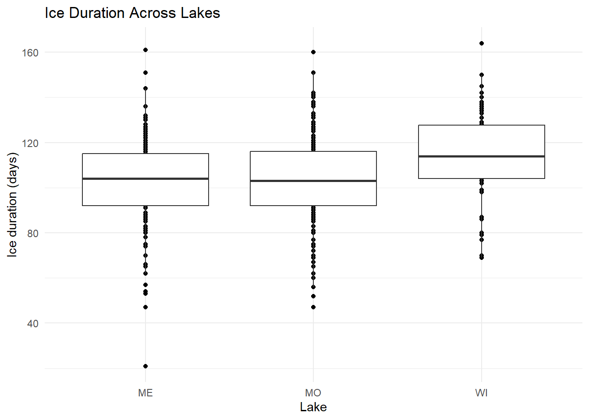
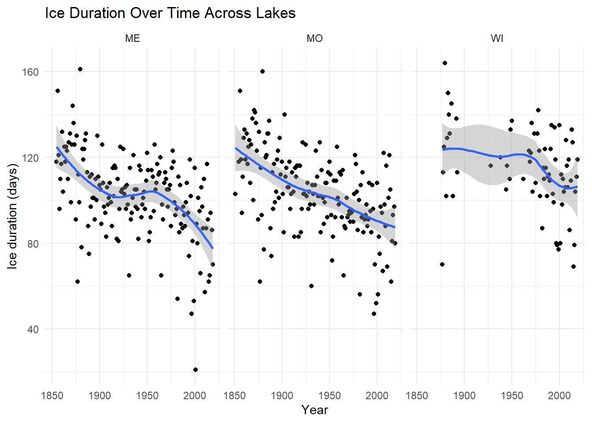
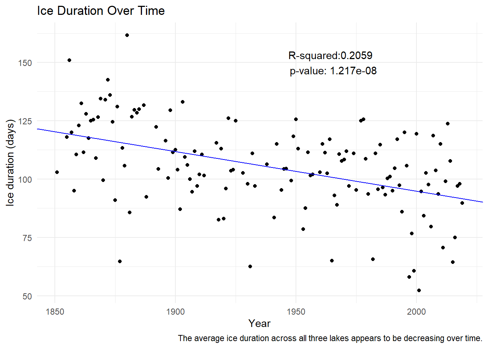
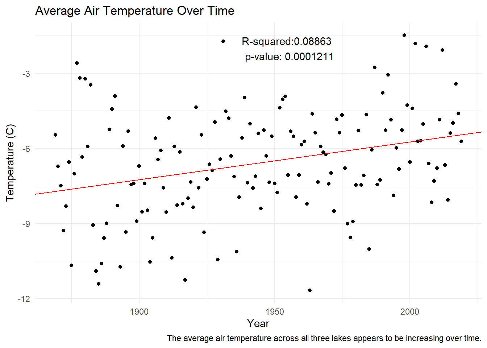

rm(list = ls())
library(tidyverse)
library(here)
library(janitor)Day 10 Activity
Setup
Read in both files (ice cover duration and meteorological data). Note that the ice cover data has some NA values stored as -999.
ice <- read_csv(here("ntl33_v7.csv"),na = "-999")
# the problems() are just where the NAs are
weather <- read_csv(here("ntl20_v6.csv"))
ice <- ice %>% rename(year = year4)
weather <- weather %>% rename(year = year4)Create a visualization that compares ice duration across different lakes in the Madison Lake Area. Include both the actual ice duration values and some representation of summary statistics for each lake. Careful if you use a boxplot over a jitter or beeswarm - what values might be doubly represented? Can you find an argument that would help you remove those from the boxplot?
#This is the plot they asked for...
ggplot(ice, aes(x = lakeid, y = ice_duration)) +
geom_point() +
geom_boxplot(outlier.shape = NA) +
theme_minimal() +
labs(title = "Ice Duration Across Lakes",
x = "Lake",
y = "Ice duration (days)")
#This is the plot I made the first time becuase it was more intuitive to see change over time
ggplot(ice, aes(x = year, y = ice_duration)) +
geom_point() +
geom_smooth() +
facet_wrap(vars(lakeid)) +
theme_minimal() +
labs(title = "Ice Duration Over Time Across Lakes",
x = "Year",
y = "Ice duration (days)")
Find the mean ice cover duration in Madison Lake Area by year (i.e., you’ll only be grouping by the year variable here). Understanding check: what are you finding the mean of here? Why are there multiple observations for each year?)
#We are finding the mean duration across all three lakes, that's why there's multiple observations per year
mean_duration <- ice %>%
group_by(year) %>%
summarise(mean_ice_duration = round(mean(ice_duration), 2))Create an exploratory visualization of mean ice cover duration by year for the Madison Lake Area. Add a sentence or two below this exploratory graph describing the overall trend(s) you observe.
ice_reg <- lm(mean_duration$mean_ice_duration ~ mean_duration$year)
# summary(ice_reg)
ggplot(mean_duration, aes(x = year, y = mean_ice_duration)) +
geom_point() +
geom_abline(slope = -0.1698, intercept = 434.4362, color = "blue") +
annotate("text", x = 1965, y = 150, label = "R-squared:0.2059 \n p-value: 1.217e-08") +
theme_minimal() +
labs(title = "Ice Duration Over Time ",
x = "Year",
y = "Ice duration (days)",
caption = "The average ice duration across all three lakes appears to be decreasing over time.")
Find the mean air temperature (using the daily average air temperature - adjusted) in Madison Lake Area by year using only observations from winter months (December, January, February)
mean_air_temp <- weather %>%
filter(month %in% c(1, 2, 12)) %>%
group_by(year) %>%
summarise(mean_air_temp = round(mean(ave_air_temp_adjusted), 2))Create an exploratory visualization of mean winter temperatures for the Madison Lake Area. Add a sentence or two below this exploratory graph describing the overall trend(s) you observe.
weather_reg <- lm(mean_air_temp$mean_air_temp ~ mean_air_temp$year)
# summary(weather_reg)
ggplot(mean_air_temp, aes(x = year, y = mean_air_temp)) +
geom_point() +
geom_abline(slope = 0.015060, intercept = -35.862981 , color = "red2") +
annotate("text", x = 1955, y = -2, label = "R-squared:0.08863 \n p-value: 0.0001211") +
theme_minimal() +
labs(title = "Average Air Temperature Over Time ",
x = "Year",
y = "Temperature (C)",
caption = "The average air temperature across all three lakes appears to be increasing over time.")
Join the mean winter air temperatures to the mean ice cover duration data you found above
Create an exploratory scatterplot of mean winter temperatures versus mean ice duration. Add a sentence or two below this exploratory graph describing the overall trend(s) you observe.
Explore thaw dates since 1970. Create a subset of the ice cover duration data since 1970 (ok to include 1970), then convert the ice_off column to a Date. Use lubridate::yday() to pull the numeric day of the year from that Date. Create an exploratory plot of the ice off day (numeric day-of-the-year) from 1970 - present. Add a sentence or two below this exploratory graph describing the overall trend(s) you observe.